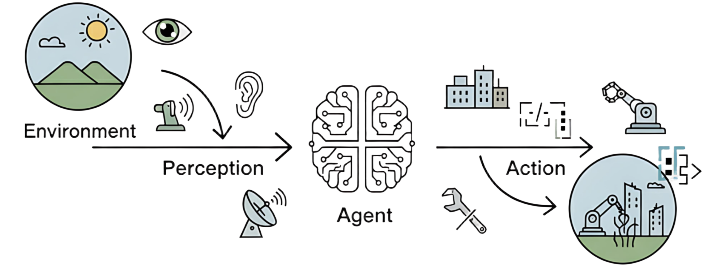
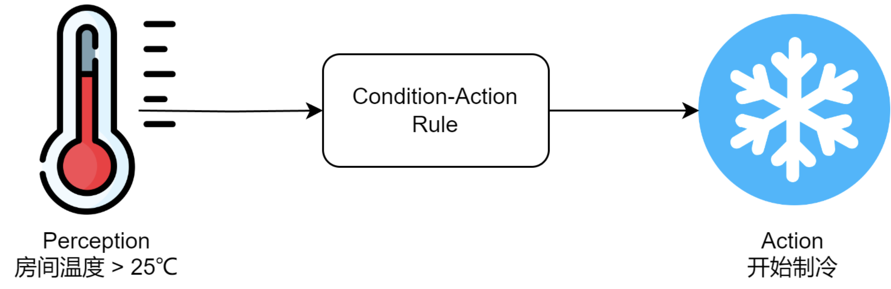

AI-概念
概念
1 | |
Agent：智能体，会自主思考、会用工具的大模型。不只是被动回答问题，还能分步规划、调用工具（比如查数据库、写代码、调接口），自动完成复杂任务，像一个智能小助手
MCP，模型上下文协议，简单来说，MCP就是让AI碰到外面的世界，一种推出的工具协议，标准化AI怎么调用外部系统，核心是Tools，就是AI可以执行的函数，每个MCP Server的工具定义都会被提前塞进上下文，当很多MCP的时候上下文开销很大，而且是持久连接
Skill，简单来说，skill是教AI怎么处理碰到的东西，本质上是一个文件夹，里面装着Skill.md的指令文件，关键就是渐进式信息公开，每次启动时AI只能看到skill的名称和简短描述，占用的token可以忽略不计，当用户问题和某个skill的描述匹配时就会自动加载这个完整的指令文件
Function Calling，
相关八股
Agent和大模型区别
Agent解决的本质问题：把大模型从信息生成器变成了任务执行者，解决了大模型只能输出文本、不能真正落地执行任务的核心痛点
模型的本质是预测下一个 token，它的所有输出都只是文本，他有下面的缺陷：
- 没有执行能力，只能输出文本，不能调用接口、查数据库
- 没有长期记忆，上下文再大也会失忆
- 不会规划复杂任务，只能一步到位
- 不会纠错迭代，错了就错了
Agent 通过给大模型集成工具调用、记忆系统、任务规划和反思能力解决了上面的问题
Agent 可以通过工具调用解决了执行问题，通过向量数据库解决了记忆问题，通过 ReAct/CoT 框架解决了规划问题，通过反思机制解决了迭代问题
Skill
skill把某类能力沉淀成可复用的提示词 + 工具调用规则 + 执行流程，是教AI怎么处理碰到的东西，本质上是一个文件夹，里面装着Skill.md的指令文件，关键就是渐进式信息公开，每次启动时AI只能看到skill的名称和简短描述，占用的token可以忽略不计，当用户问题和某个skill的描述匹配时就会自动加载这个完整的指令文件
平时用过skill，比如说固定格式的信息抽取、代码生成或代码审查、知识库问答里的检索和回答约束等等，但是没有自己写过skill，如果我来写的话会重点关注三个内容
明确输入输出格式、绑定可调用工具和约束、给模型加上边界条件和失败处理策略
如何看待AI
我平时用 AI 主要有三类场景。
第一类是 提效，比如查资料、总结文档、整理思路、写初稿。
第二类是 研发辅助，比如写代码、解释报错、补测试、做方案对比。
第三类是 认知放大，比如快速进入陌生领域，先建立一个初步框架，再自己验证和细化。
但我的使用原则是：AI 可以帮我加速，但不能替我负责。尤其是在代码、数据、业务规则这类场景，我不会直接照抄，而是会做验证、压测或者人工复核。
我对 AI 的看法是，它本质上是一个很强的通用能力放大器。短期看，它会先重构很多岗位的工作方式；长期看，谁更会把 AI 接进工作流、接进业务系统，谁的效率优势会越来越明显。
短期记忆和长期记忆
短期记忆：就是大模型当前的上下文窗口，特点是访问速度极快、无额外开销，但容量有限（比如 GPT-4o 是 128k Token），对话结束就会丢失
长期记忆：是存在外部存储（向量数据库、MySQL）的所有历史数据，容量无限、永久保存，但需要通过检索才能被大模型使用
智能体和发展史
概念
在人工智能领域，智能体被定义为任何能够通过传感器（Sensors）感知其所处环境（Environment），并自主地通过**执行器（Actuators）采取行动（Action）**以达成特定目标的实体
上述概念包含四个基本要素：
-
环境是智能体所处的外部世界
对于自动驾驶汽车，环境是动态变化的道路交通；对于一个交易算法，环境则是瞬息万变的金融市场。智能体并非与环境隔离，它通过其传感器持续地感知环境状态。摄像头、麦克风、雷达或各类**应用程序编程接口（Application Programming Interface, API）**返回的数据流，都是其感知能力的延伸
-
获取信息后，智能体需要采取行动来对环境施加影响，它通过执行器来改变环境的状态
执行器可以是物理设备（如机械臂、方向盘）或虚拟工具（如执行一段代码、调用一个服务）
-
真正赋予智能体智能的，是其自主性（Autonomy）
智能体并非只是被动响应外部刺激或严格执行预设指令的程序，它能够基于其感知和内部状态进行独立决策，以达成其设计目标。这种从感知到行动的闭环，构成了所有智能体行为的基础

传统视角下的智能体
传统视角下的智能体，是在大语言模型出现之前，是那些结构最简单的反射智能体（Simple Reflex Agent）。它们的决策核心由工程师明确设计的“条件-动作”规则构成
完全依赖于当前的感知输入，不具备记忆或预测能力。它像一种数字化的本能，可靠且高效，但也因此无法应对需要理解上下文的复杂任务，局限性引出了一个关键问题：如果环境的当前状态不足以作为决策的全部依据，智能体该怎么办？

大语言模型
大模型Agent面试全攻略（附答题思路）
一、核心概念与架构篇
Q1：请简述Agent的基本架构组成，并解释其与传统LLM Chain的区别。
回答要点：Agent = LLM + 规划(Planning) + 记忆(Memory) + 工具使用(Tool Use)。
区别：
- Chain是预定义的、线性的硬编码工作流。
- Agent具备“自主性”，它根据目标自发决定执行路径，通过推理循环（Reasoning Loop）不断调整策略。
Q2：解释ReAct模式的工作原理。
回答要点：ReAct (Reasoning + Acting)是Agent的基石。它将“思考”（Thought）和“行动”（Action）结合。LLM先生成一段推理，说明下一步要做什么，然后调用工具观察（Observation）结果，再根据结果进入下一轮推理。
Q3：如何实现Agent的长期记忆（Long-term Memory）？
回答要点：
- 短期记忆：利用Context Window，存储当前会话的历史（Chat History）。
- 长期记忆：通过RAG（检索增强）。将历史经验、知识编码为Embedding存入向量数据库，Agent在执行任务前检索相关经验（Experience Retrieval）。
- 2026新趋势：利用长文本模型（Long-context LLMs）直接处理超长历史，或者通过“摘要层级结构”对记忆进行递归压缩。
二、多智能体协同（Multi-Agent Systems, MAS）
Q4：单Agent遇到瓶颈时，为什么需要Multi-Agent？常见的协作模式有哪些？
回答要点：
- 原因：单个Agent在处理复杂、跨领域长任务时容易出现“注意力漂移”或“推理链断裂”。
- 协作模式： 中心化（Boss-Worker）：一个主Agent拆分任务并指派给子Agent。流水线（Pipeline/Sequential）：A的输出作为B的输入（如代码生成 -> 代码审查 -> 修复）。民主协作（Joint Discussion）：多个Agent共同讨论得出结论。
Q5：多智能体系统中如何解决“无限循环”或“通信冗余”问题？
回答要点：
- 循环检测：引入状态机控制流程，设置最大迭代次数。
- Token控制：对Agent间的对话进行摘要处理。
- 终止条件：明确定义任务完成的标准（Definition of Done）。
三、Agent核心设计模式 (Design Patterns)
Q6：请对比“工作流（Workflows）”与“自主智能体（Autonomous Agents）”的优劣。
回答要点：
- Workflows：通过DAG（有向无环图）或状态机硬编码路径。优点是高可靠性、结果可预期，适用于报销审批、标准化客服。
- Autonomous Agents：由LLM决定循环次数和工具调用。优点是灵活性极高，适用于开放式研究、代码编写。
- 面试金句：2026年的工程趋势是“用Workflow约束Agent”，即在框架定义的路径内给予Agent局部决策权。
Q7：详细解释“编排者-执行者（Orchestrator-Workers）”模式。
回答要点：
- 主Agent（Orchestrator）负责将复杂任务分解为子任务，分发给具有不同Skill的Worker Agents，最后汇总结果。
- 适用场景：大型软件开发（一个写UI，一个写后端，一个写测试）。
- 难点：任务分解的粒度。如果拆得太细，通信成本极高；太粗，Worker会产生幻觉。
Q8：什么是“反思/自我纠正（Reflection/Self-Correction）”模式？
回答要点：这是提升Agent成功率最有效的模式。Agent生成输出后，由另一个（或同一个）Agent扮演批评者（Critic），检查输出是否符合约束条件，并提供反馈让前者迭代。
技术细节**：**可以使用Reflexion架构，记录“失败轨迹”作为长短期记忆，避免重复同样的错误。
四、深度技术实现与状态管理
Q9：在多轮对话Agent中，如何处理“状态爆炸”和“上下文溢出”？
回答要点：
- State Schema：定义严格的状态结构（如使用LangGraph的TypedDict），只保存核心变量。
- Trim Strategy：不仅是简单的截断，而是根据语义重要性保留（例如保留System Prompt、最近N轮对话和当前任务目标）。
- Summary Buffer：将旧的对话摘要化，将摘要存入Context头部。
Q10：如何保证Agent调用工具（Function Calling）的可靠性？
回答要点：
- 语法层面：利用JSON Mode或强类型约束。
- 逻辑层面：引入“确认机制（Human-in-the-loop）”，对于高风险操作（如删库、转账）必须由人点击确认。
- 重试逻辑：如果LLM生成的参数不合法，将报错信息返回给LLM，让其自我修复（Self-heal）。
Q11：LangGraph中的“节点（Node）”和“边（Edge）”与传统工作流有何不同？
回答要点：
- 传统工作流的边是固定的。
- LangGraph的边可以是条件边（Conditional Edges），由LLM的输出决定下一步走向哪个Node。
- 支持循环（Cycles），这是Agent能够不断尝试直到成功的核心。
Q15：当知识库内容更新很快（如每日新闻或实时股价）时，你的RAG系统如何应对？
回答要点：
- 动态路由：Agent根据问题类型识别出“实时性要求”，如果是实时问题，优先调用实时API或搜索工具，而非检索向量库。
- 流式索引更新：利用数据流（如Kafka）监听知识库变化，实现增量Embedding写入。
- 缓存失效策略：针对高频问题设置TTL缓存，并在源数据更新时触发缓存失效。
Q16：如何提升问答准确度
提升准确度不能只靠Prompt，而是一套组合拳：
深度解析层：Layout-Aware Parsing（布局感知解析）
- 痛点：传统的文本分割（Chunking）会打断表格结构或将标题与正文分离，导致语义断裂。
- 解决方案：使用Layout Analysis模型（如DocLayout-YOLO或Unstructured）。将文档识别为：标题、正文、表格、图片、列表。
- 语义分块：按标题层级（H1-H4）进行切分，而不是按字符数。确保每个Chunk都有完整的上下文。
检索增强层：Multi-Stage Retrieval
- 混合检索（Hybrid Search）：向量检索（语义）+ BM25（关键词，解决专有名词、缩写问题）。
- 重排序（Reranking）：使用Cross-Encoder模型（如BGE-Reranker）对初筛的Top-50进行精排。这是提升准确度性价比最高的方法。
- 查询扩展（Query Expansion）：Agent自动生成3个同义问题并行检索，解决用户提问过于简单的问题。
生成校验层：Self-Correction (Self-RAG)
- 验证节点：让Agent判断 “检索到的内容是否足以回答问题？”（不够则重新检索）“答案中是否有任何内容是检索结果里没提到